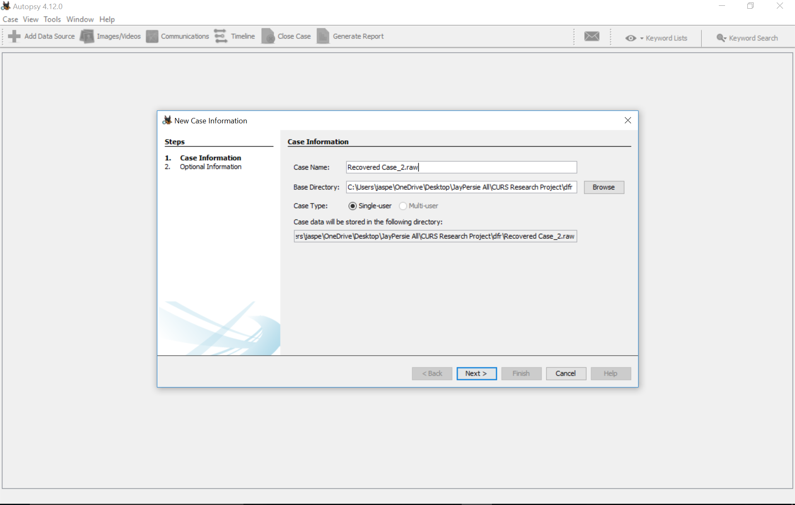
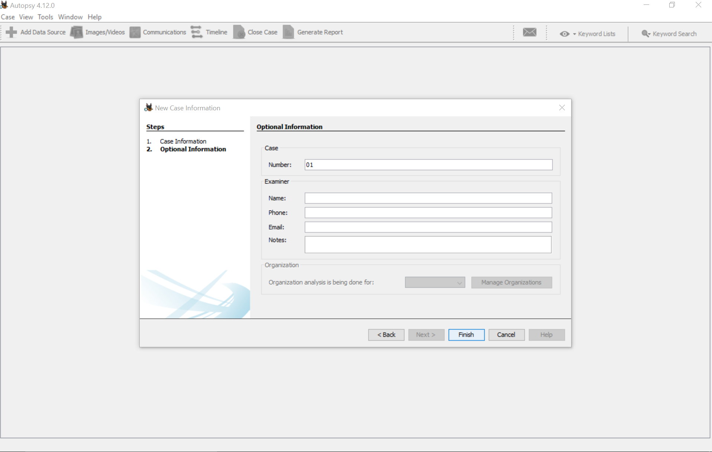
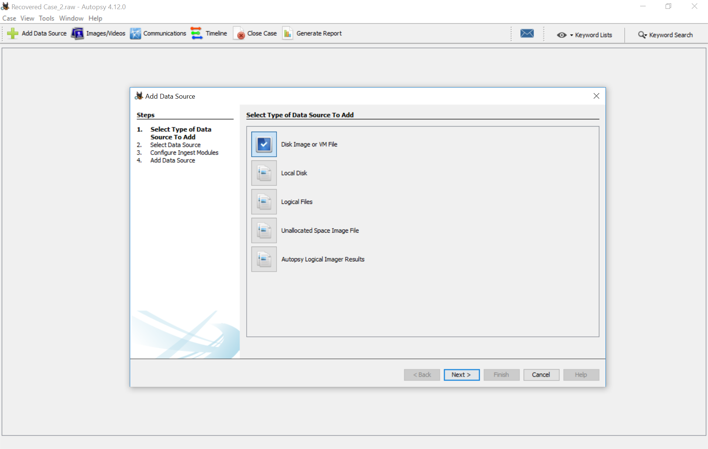
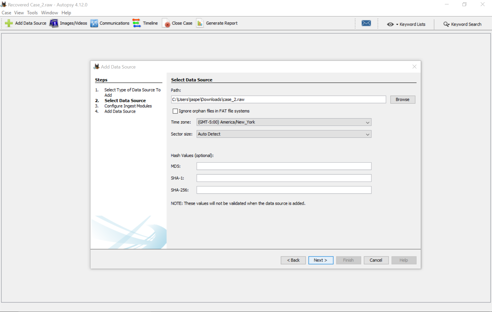
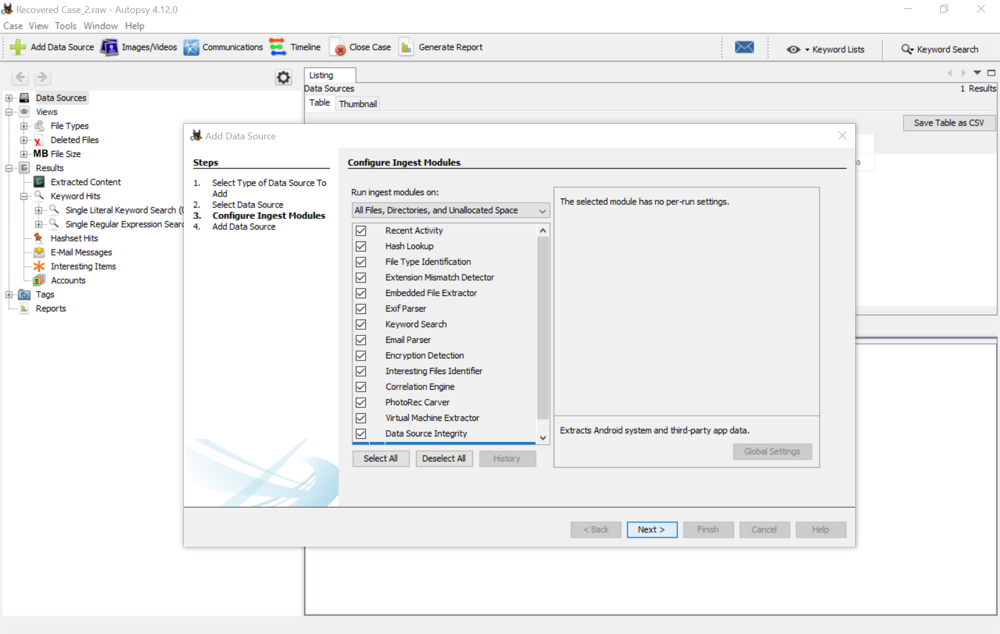
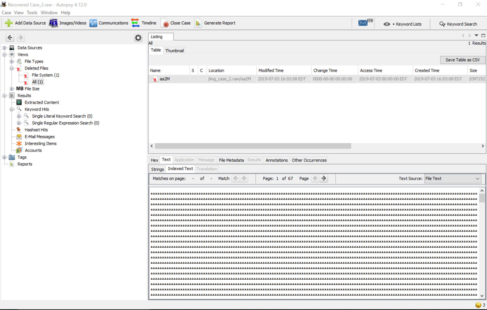

Using a raw disk image as input to the Deleted File Recovery tool (Autopsy)
Step 1. Enter your case name and select the directory you want to store the results.
Step 2. Enter optional information for example, the case number, name, email etc.
Step 3. Select "Disk Image" as the type of data source.
Step 4. Select the raw disk image you want to input. For example, in our case, case_2.raw.
Step 5. Select Ingest Module related to the feature being tested. For metadata based dfr no Ingest Module is needed where as for file carving "Photorec Carver" has to be selected.
Step 6. Select "Deleted Files" in the left panel and check whether any deleted file is recovered.
Step 7. Click "File Metadata" at the bottom panel to view more details about the file.

Step 8. Export the recovered file from the dfr tool and use other software to compare the recovered file with the expectation.